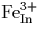
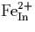
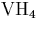
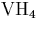

There is great interest in the electrical effects associated with heavy iron doping of InP. Iron doping is used to produce mid-gap levels, allowing the use of InP as a semi-insulating substrate [56,57]. However Fe has many unusual properties in InP which are not yet fully understood. In particular, the charge compensation mechanism of iron has not yet been fully explained [58].
It is known that in InP:Fe, the Fe substitutes for In and primarily adopts the neutral  state (labelled 3+ to denote its oxidation state). However, some of the iron is compensated, forming , and metallic donor defects are not present in sufficiently high concentrations to account for this. Therefore it has been proposed that another donor must be present, however its identity is not established. Recent work has shown a correlation between the intensity of the 2316 cm-1 LVM and the concentration [58], suggesting that this defect could be the unknown donor.
When InP is grown by the LEC method using wet boric oxide as
encapsulant, the water vapour dissociates and hydrogen is incorporated
into the material. The most intense H-related mode in as-grown
crystals occurs at 2316 cm-1 (found in InP crystals both with and
without Fe), and has been associated with  [59].
[59].
This assignment has been made for several reasons. Uniaxial stress
measurements show the centre to have Td symmetry [59],
consistent with  . The LVM lies close to that of other
P-H related modes, and this is consistent with results obtained for
 in Si [60]. The defect can be created by
proton irradiation [61], which also leads to the creation of
the required In vacancies.
. The LVM lies close to that of other
P-H related modes, and this is consistent with results obtained for
 in Si [60]. The defect can be created by
proton irradiation [61], which also leads to the creation of
the required In vacancies.
H/D mixed defects have not been observed by mixed H+/D+ implantation
because the signal to noise ratio of published spectra [61]
is not high enough, and the FWHPs of the proton- and deuteron-induced
LVMs are too broad to resolve the individual components. This last
point is probably the origin of the apparent decrease in intensity of
the 2316 cm-1 line reported with mixed implantation, since there
are several components near 2316 cm-1. This is not the case for
the LVM at 2202 cm-1 tentatively assigned to  , and
this contrasting result also supports the assignment.
, and
this contrasting result also supports the assignment.
Other LVMs in SI InP include H-acceptor modes (mainly (Zn,H)) due to inadvertent contamination, as well as other LVMs whose origin is not clear. In slightly n-type InP:Fe, the (Zn,H) LVM is not observed, but another LVM at 2285 cm-1 is always observed. Annealing of LEC InP produces LVMs attributed to partially hydrogenated vacancies, but these are much lower in intensity than the line at 2316 cm-1.
There has been no theoretical examination of these defects performed
to date. We therefore investigate the structure, local vibrational
modes and charge states of a range of hydrogenated vacancies,  .
.